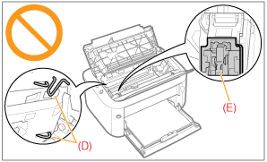

|
Consulte también "Instrucciones de seguridad importantes" y "Almacenamiento de cartuchos de tóner".
|
|
IMPORTANTE
|
||||
|
Acerca de los cartuchos de tóner de repuesto
Para una calidad de impresión óptima, se recomienda utilizar únicamente un cartucho original de Canon cuando se sustituya el cartucho de tóner.
Tenga cuidado con los cartuchos de tóner falsificados.
Le informamos que existen cartuchos de tóner Canon falsificados en el mercado.
El uso de cartuchos de tóner falsificados puede producir mala calidad de impresión o un funcionamiento deficiente de la máquina.
Canon no se hace responsable de posibles defectos de funcionamiento, accidentes o daños ocasionados por el uso de cartuchos de tóner falsificados.
Para más información, consulte http://www.canon.com/counterfeit.
Agarre el cartucho de tóner correctamente.
Cuando manipule el cartucho de tóner, sujételo adecuadamente con el lado de la flecha mirando hacia arriba según se muestra en la figura. No lo coloque en posición vertical ni invertida.
 No toque los contactos eléctricos (A) ni la memoria del cartucho de tóner (B) y no abra la puerta protectora del tambor (C).
Si toca los contactos eléctricos (A) o la memoria del cartucho de tóner (B), podrían producirse daños en el cartucho.
La calidad de la impresión podría deteriorarse también si toca o daña el tambor fotosensible ubicado en el interior del cartucho de tóner. No toque ni abra la puerta protectora del tambor (C).
 No toque los contactos de alta tensión (D) ni los contactos eléctricos (E).
Podrían producirse daños en el cartucho.

Otras precauciones
No exponga el cartucho de tóner a la luz directa del sol ni a una luz intensa.
No intente desmontar ni modificar el cartucho de tóner.
Podría formarse condensación (gotas de agua en el interior o el exterior) en el cartucho de tóner si éste se traslada a un entorno donde se produzca un cambio brusco de temperatura o humedad.
Cuando traslade un cartucho de tóner nuevo a un lugar con una temperatura distinta, deje el cartucho en la bolsa protectora en la nueva ubicación durante dos horas o más para que se adapte a la nueva temperatura. No deje la tapa superior abierta durante demasiado tiempo con el cartucho de tóner instalado.
Mantenga el cartucho de tóner alejado de productos que generen ondas magnéticas, como pueden ser un ordenador o un monitor.
Un cartucho de tóner es un producto magnético. Mantenga el cartucho de tóner alejado de productos que puedan resultar dañados por magnetismo como, por ejemplo, disquetes o discos duros. Esto podría ocasionar daños en los datos.
|
|
NOTA
|
|
Acerca de los materiales de embalaje
Los materiales de embalaje pueden diferir en su forma o posición y pueden añadirse o eliminarse sin previo aviso.
|